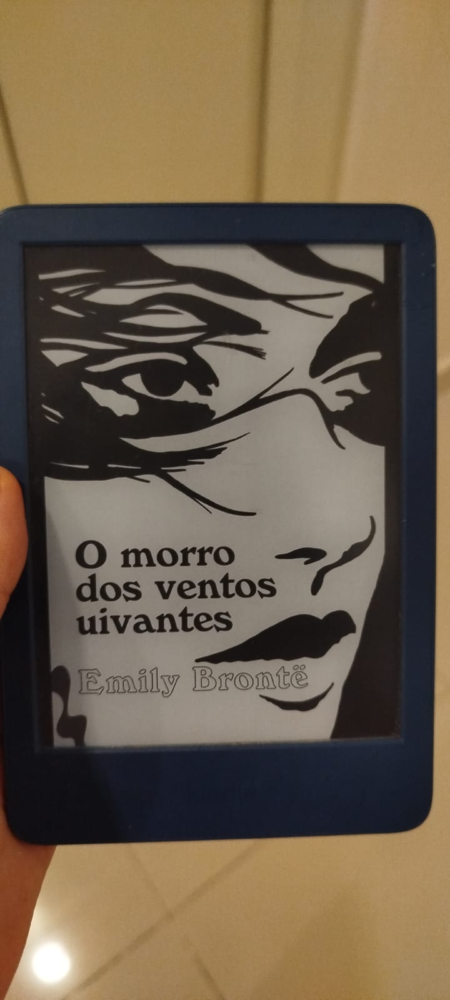

Alicia Cavalcante de Oliveira
Entre a organização da informação e o desenvolvimento de software
Minha trajetória acadêmica e profissional conecta Biblioteconomia e Desenvolvimento de Software. Transito entre a gestão de informações, o tratamento de dados e o desenvolvimento de aplicações, buscando compreender como diferentes conhecimentos e tecnologias podem contribuir para a criação de soluções digitais.
Ver projetos Baixar currículodef perfil(palavra):
eu = ["bibliotecária", "dev", "ciência da informação", "tecnologia"]
if palavra in eu:
return True
return False Sobre mim
Tudo começou na Biblioteconomia, onde aprendi na prática como organizar, preservar e dar acesso ao conhecimento. Na UNESP, tive a chance de trabalhar com acervos — principalmente fotográficos — e mergulhar em uma bagagem profunda sobre como a informação foi registrada e cuidada ao longo do tempo, dos suportes mais antigos aos mais atuais.
A curiosidade pelo mundo digital, no entanto, falou mais alto. O interesse por tecnologia e pela liberdade de construir ferramentas voltadas para as pessoas me levou ao Desenvolvimento de Software. Hoje, ainda no início dessa nova graduação, somo dois universos diferentes, mas igualmente ricos: a base sólida de quem já conhece a fundo a história da informação com a empolgação de quem está aprendendo a programar e dar os primeiros passos no código.
Longe do terminal e dos livros técnicos, meu tempo livre pertence aos animais, aos universos de ficção e fantasia e a boas playlists de pop. Também gosto de observar paisagens, flores e registrar em fotos os pequenos detalhes cotidianos que merecem ser lembrados.
"Alguém tem que começar. Alguém tem que dar o primeiro passo e fazer o que é certo, porque é certo." — Brandon Sanderson, O Caminho dos Reis


Objetivo acadêmico
Aprofundar minha formação em Desenvolvimento de Software e construir uma trajetória acadêmica voltada à pesquisa científica. Tenho como objetivo participar de projetos de iniciação científica e prosseguir na pós-graduação, com interesse em mestrado e doutorado, investigando possíveis diálogos entre tecnologia, desenvolvimento de sistemas e Ciência da Informação.
Objetivo profissional
Atuar no desenvolvimento de software, especialmente em soluções back-end e gestão de dados, integrando conhecimentos de tecnologia e Ciência da Informação. Busco construir aplicações eficientes, acessíveis e orientadas às necessidades dos usuários
Áreas de interesse
Interesses.
- Desenvolvimento Back-end.
- Banco de Dados.
- Computação em Nuvem.
- Linux.
- Acessibilidade informacional.
- Disseminação da informação.
- Acervos não convencionais.